Clicking anywhere on the visualization will bring up a menu with a bunch of sliders you can use to change how the L-Systems are generated. Clicking off the menu will make it disppear. Using the menu you can control the following parameters:
Fade time: The time it takes for a line to completely fade away
Line length: The length of the shortest possible straight line (the distance that the turtle moves when it is told to move forward)
Line width: The width of the lines being drawn
Lines per frame: The number of lines that are drawn every frame
Time per frame: How often a frame is drawn
Angle randomness: 100% angle randomness means all angles are randomly chosen from between 5° and 180°. 0% angle randomness means all angles are chosen from a pool of around 10 "nice looking" angles (such as 90°, 20°, etc)
Maximum system length: The length to grow each system's string before switching to a new system
The remaining parameters are explained in the following diagram of a complete L-System:

If you want to share your current settings you can click the save settings in url button at the bottom of the menu and it will change the URL of the page to one that includes all the current parameters.
An L-System is a string rewriting system that can generate fractal and tree like structures. They consist of a seed string and a set of rules to grow the seed into a more complex string. Each rule operates on a single character of the string, and replaces that character with another string. For example, consider the following seed and rules:
Seed: "abc"
Rules:
"a" -> "cc",
"c" -> "ba"
Applying these rules to the seed will yield the string "ccbba". Now the same rules can be applied to this new string to grow the system even more:
"ccbba" becomes "bababbcc"
"bababbcc" becomes "bccbccbbbaba"
etc
L-Systems can be visualized in many different ways, but the most common method involves using a turtle.
First, you come up with an L-System as well as an arbitrary angle, A, to associate the L-System with. Then, you grow your L-System string by applying rules to the seed numerous times. To draw the L-System using the turtle you interpret every character of the grown string as an instruction to the turtle. Most L-Systems visualizers (including this one) use the following character set:
Any other characters can be ignored by the turtle.